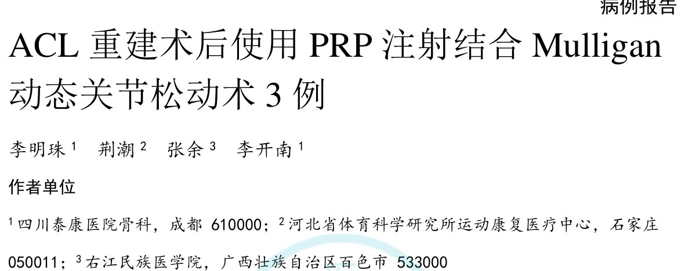
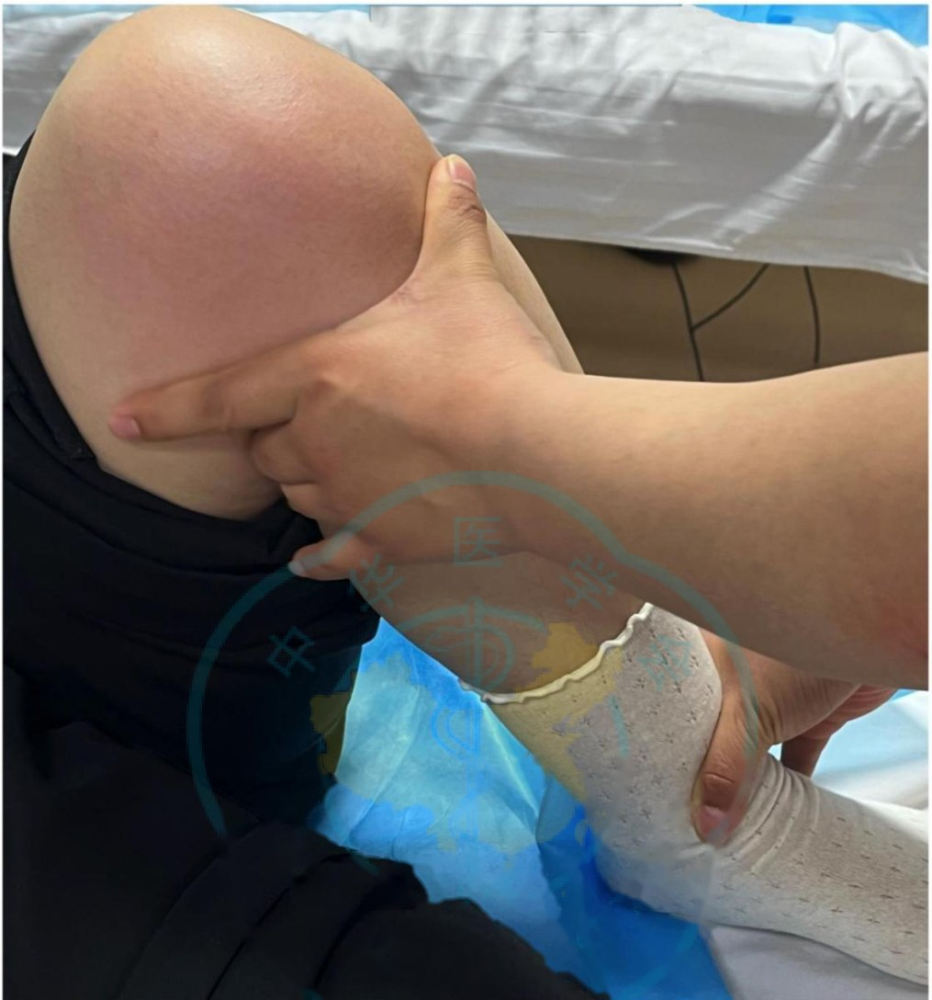
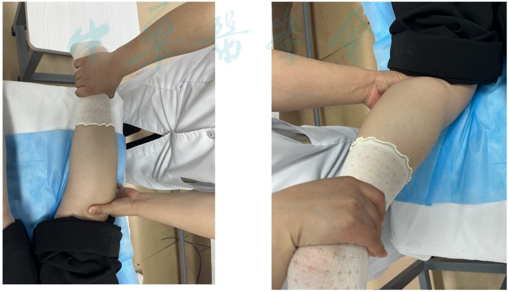
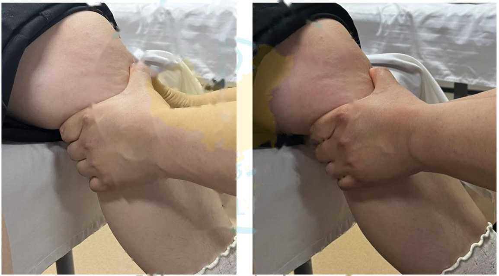
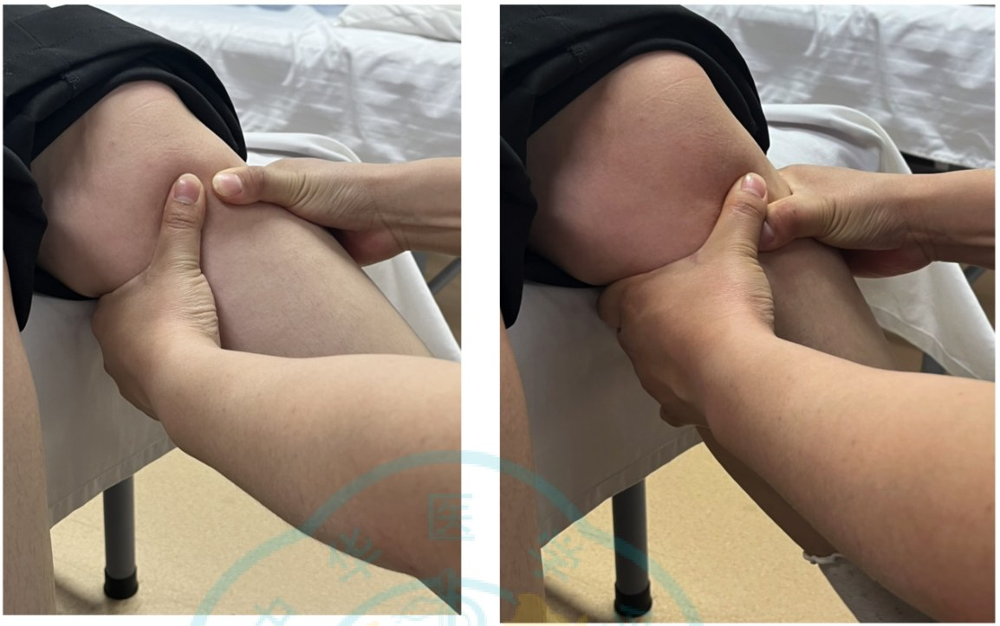
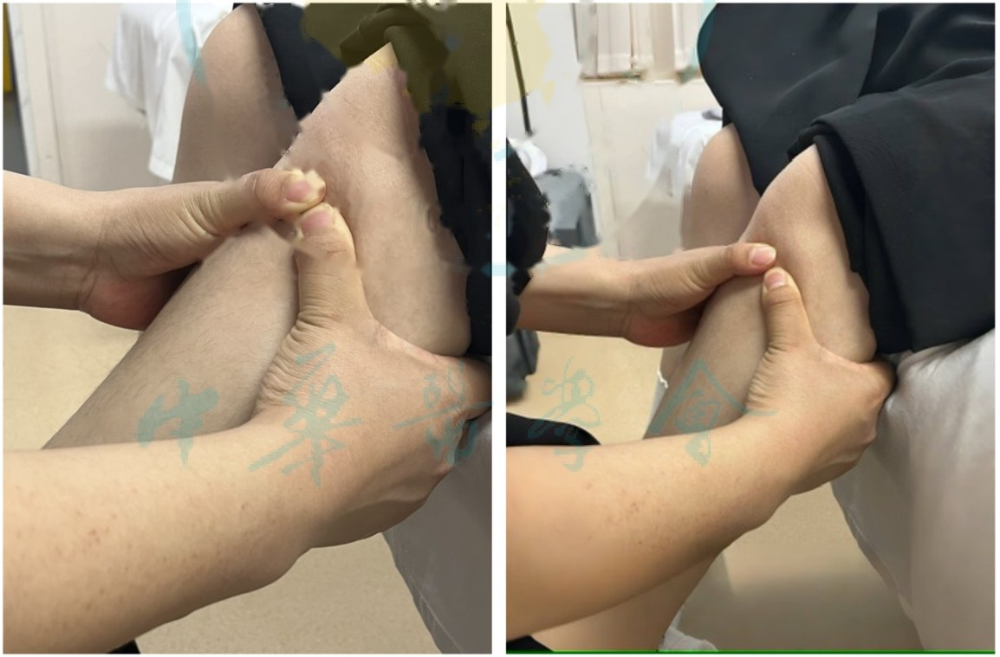

🔖原文首页（中国临床案例成果数据库 2025 年第 7 卷）
📚 文献卡片
▪ 题目：ACL 重建术后使用 PRP 注射结合 Mulligan 动态关节松动术 3 例
▪ 作者：李明珠 · 荆潮 · 张余 · 李开南（通信作者）
▪ 机构：四川泰康医院骨科；河北省体育科学研究所运动康复医疗中心；右江民族医学院
▪ 来源：中国临床案例成果数据库（中华医学会杂志社），2025 年第 7 卷
▪ DOI：10.3760/cma.j.cmcr20250526-02067
▪ 文章类型：病例报告（回顾性，3 例）
▪ 关键词：前交叉韧带；术后康复；膝关节疼痛；动态关节松动术；自体富血小板血浆注射
ACL 重建术后，常规康复对改善功能和缓解疼痛效果一般。自体富血小板血浆（PRP）已广泛用于软骨、髌韧带损伤，但单纯 PRP 无法解决术后普遍存在的肌力下降、膝关节失稳等问题。
Mulligan 动态关节松动术（MWM）是在治疗师施加持续的被动关节滑动的同时，让患者做主动运动的手法。作者想看看：PRP 注射再加上 Mulligan 动态松动，会不会比单纯 PRP 更好？
| 项目 | 内容 |
|---|---|
| 病例 | 3 名职业运动员（橄榄球、高山滑雪、花样滑冰），22～23 岁，2 男 1 女，2023 年 6 月至 2024 年 1 月 |
| 就诊 | ACL 重建术后 4 周，膝关节肿胀、疼痛、活动受限、大腿肌肉萎缩、步态异常 |
| 分组 | 观察组 2 例：PRP + Mulligan 动态松动；对照组 1 例：单纯 PRP |
| PRP | 术后第 4、6、8 周关节腔注射，二次离心法制备，血小板浓度为全血的 4～8 倍 |
| Mulligan | 股四头肌静力收缩、直腿抬高 + 冰敷 15 分钟后行动态松动；每周 4 次，连续 6 周 |
| 结果（作者报告） | 观察组关节活动度、KOOS、等速肌力更好；两组疼痛、再损伤、不良反应无差异 |
一句话概括：只有 3 例，而且对照组没有做任何康复训练——这篇更适合作为 Mulligan 膝关节动态松动的操作参考，不能用来证明 PRP + Mulligan 的疗效。
• 纳入：18～40 岁；临床检查和 MRI 确认 ACL 部分或完全撕裂；已行 ACL 重建
• 排除：精神障碍；类风湿关节炎、痛风；12 个月内膝关节活动性感染；膝骨关节炎、半月板损伤、双侧 ACL 损伤；内、外侧副韧带 3 级损伤；PRP 过敏；严重器官功能障碍
• 功能诊断（ICF）：膝关节活动范围下降、下肢肌力下降、步态异常；转移、步行和参与受限
表 1 两组治疗前一般情况
| 指标 | 观察组（n=2） | 对照组（n=1） | P 值 |
|---|---|---|---|
| 男/女（例） | 2/0 | 0/1 | 0.25 |
| 年龄（岁） | 23.9±10.2 | 22.0±11.2 | 0.33 |
| 体质量指数（kg/m²） | 20.9±1.8 | 19.3±2.2 | 0.21 |
| 橄榄球 / 高山滑雪 / 花样滑冰（例） | 1 / 1 / 0 | 0 / 0 / 1 | — |
| 60°/s 伸膝峰力矩（N·m） | 48.1±20.1 | 50.3±21.2 | 0.68 |
| 60°/s 屈膝峰力矩（N·m） | 24.0±8.1 | 23.8±10.9 | 0.94 |
| 120°/s 伸膝峰力矩（N·m） | 43.9±14.6 | 46.6±11.7 | 0.55 |
| 120°/s 屈膝峰力矩（N·m） | 22.4±12.3 | 21.9±7.9 | 0.88 |
| 主动屈膝（°） | 90.2±3.2 | 89.9±2.1 | 0.33 |
| 主动伸膝（°） | -10.0±1.8 | -10.3±2.0 | 0.25 |
| 被动屈膝（°） | 100.4±1.5 | 101.2±1.8 | 0.21 |
| 被动伸膝（°） | 0.2±1.1 | 0.8±2.3 | 0.30 |
| VAS 疼痛 | 8.1±2.6 | 7.9±2.0 | 0.41 |
| KOOS | 43.3±2.9 | 42.8±1.2 | 0.18 |
🔖按原文表 1 整理；运动项目一栏原文分别给出 P 值，此处省略。注意：对照组只有 1 例，却报告了标准差
• 时间：ACL 重建术后第 4、6、8 周
• 抗凝剂与全血比例 1∶9；全血加等量生理盐水，二次离心（第一次 10 分钟，第二次 3000 转/分 10 分钟）
• 保留离心管底部 2.5 ml 富血小板血浆，血小板浓度为浓缩前的 4～8 倍，摇匀后注入关节腔
术后第 4 周起，先做股四头肌静力收缩、直腿抬高（每天 3 组）→ 冰敷 15 分钟 → Mulligan 动态松动。每组 10 次以上，组间休息 10 秒，每周 4 次，连续 6 周。
① 动态松动结合主动屈伸
• 仰卧位：治疗师一手握住胫骨平台下缘，另一手持小腿远端，借上肢和躯干力量将胫骨向内滑动，同时让患者主动屈伸膝
• 俯卧位：预备动作相同，滑动方向改为向外，患者同样主动屈伸

🔖图 1 仰卧位动态松动：治疗师维持胫骨滑动，患者主动屈伸膝关节（已去除水印英文）

🔖图 2 动态松动结合主动运动
② 结合胫骨旋转的动态松动
• 屈膝 + 胫骨内旋：患者坐于床边，小腿自然下垂；治疗师双手握住胫骨近端，施加内旋并保持，患者主动屈膝（图 3、图 4）
• 伸膝 + 胫骨外旋：治疗师施加外旋，同时用手掌将腓骨头向后推，引导患者主动伸膝（图 5）

🔖图 3 胫骨内旋的动态松动（已去除水印英文）

🔖图 4 胫骨内旋的动态松动结合主动运动

🔖图 5 胫骨外旋的动态松动结合主动运动（已去除水印英文）
康复人看点：Mulligan 的原则是无痛——施加滑动或旋转后，患者主动活动应无痛且活动度增加；若有痛，调整滑动方向或力度。
表 2 两组治疗后比较
| 指标 | 观察组（n=2） | 对照组（n=1） | P 值 |
|---|---|---|---|
| 主动屈膝（°） | 135.2±5.1 | 89.9±4.0 | 0.03 |
| 主动伸膝（°） | 0.50±2.3 | 0.45±1.3 | 0.03 |
| 被动屈膝（°） | 126.4±1.5 | 101.2±1.8 | 0.01 |
| 被动伸膝（°） | 11.7±3.5 | 3.29±3.9 | 0.02 |
| VAS 疼痛 | 2.1±2.6 | 2.9±1.0 | 0.41 |
| KOOS | 83.3±6.1 | 51.5±7.2 | 0.05 |
| 再损伤率（%） | 3.2 | 3.8 | 0.35 |
🔖按原文表 2 整理。注意：观察组主动屈膝（135°）大于被动屈膝（126°），对照组主动屈膝与治疗前完全相同（89.9°）
表 5 治疗后等速肌力（峰力矩，N·m）
| 角速度 / 动作 | 观察组（n=2） | 对照组（n=1） | P 值 |
|---|---|---|---|
| 60°/s 伸膝 | 59.76±21.2 | 50.7±22.6 | 0.01 |
| 60°/s 屈膝 | 30.5±12.3 | 24.0±7.9 | 0.01 |
| 120°/s 伸膝 | 53.1±15.6 | 46.7±11.8 | 0.01 |
| 120°/s 屈膝 | 28.1±13.9 | 21.5±7.8 | 0.01 |
术后第 14、24 周做睁眼单腿静态平衡测试（每腿重复 5 次）：
表 3 观察组单腿静态平衡
| 指标 | 14 周 左腿 | 14 周 右腿 | 24 周 左腿 | 24 周 右腿 |
|---|---|---|---|---|
| X 轴平均位置 | 7.30 | -11.53 | 3.55 | -6.03 |
| Y 轴平均位置 | 126.13 | -151.54 | 124.14 | -124.97 |
| X 轴移动距离 | 310.10 | 489.21 | 242.48 | 279.65 |
| Y 轴移动距离 | 325.33 | 388.29 | 287.52 | 223.36 |
| X 轴平均速度 | 17.42 | 21.43 | 12.13 | 13.85 |
| Y 轴平均速度 | 18.54 | 27.18 | 14.38 | 10.93 |
表 4 对照组单腿静态平衡
| 指标 | 14 周 左腿 | 14 周 右腿 | 24 周 左腿 | 24 周 右腿 |
|---|---|---|---|---|
| X 轴平均位置 | 5.20 | -10.11 | 2.15 | -3.03 |
| Y 轴平均位置 | 115.03 | -120.40 | 110.14 | -104.17 |
| X 轴移动距离 | 201.10 | 410.11 | 222.18 | 210.55 |
| Y 轴移动距离 | 210.13 | 311.09 | 201.22 | 203.16 |
| X 轴平均速度 | 15.12 | 19.10 | 9.13 | 11.50 |
| Y 轴平均速度 | 12.40 | 21.11 | 10.81 | 8.23 |
🔖按原文表 3、表 4 整理，原文未标单位。移动距离和速度越小，通常代表静态平衡越好
• 作者结论：PRP + Mulligan 改善了关节活动度、KOOS 和屈伸肌力，平衡能力“两组具有统计学差异”
• 恢复训练后偶有疼痛和肿胀，冰敷后缓解，两组不良反应无差异
• 作者认为机制互补：PRP 镇痛、抗炎、促修复，使 Mulligan 更容易在无痛范围内达到最大活动度
这篇病例报告的数据和统计存在较多硬伤，阅读时需特别谨慎：
• 样本量无法做统计：观察组 2 例、对照组 1 例，却给出了均数±标准差和 P 值。1 例患者无法计算标准差；“再损伤率 3.2% 对 3.8%”在 3 名患者中不可能出现
• 对照组根本没有做康复：对照组“单纯 PRP 注射”，观察组除 Mulligan 外还做了股四头肌训练、直腿抬高和冰敷。比较的实际上是“有康复 vs 无康复”，无法说明 Mulligan 或 PRP 的作用
• 前后数据矛盾：
• 摘要写 VAS 的 P=0.32、再损伤 P=0.76、观察组各项 P<0.001；表 2 却是 VAS 0.41、再损伤 0.35，各项 P 在 0.01～0.05
• 两名男性观察组患者都是 23 岁，表 1 却写 23.9±10.2 岁
• 观察组治疗后主动屈膝 135°，反而大于被动屈膝 126°；被动伸膝 11.7° 即明显过伸，不符合常理
• 对照组 24 周后主动屈膝仍为 89.9°，与术后 4 周完全相同
• 平衡测试：对照组的移动距离和速度普遍小于观察组（通常意味着平衡更好），作者却得出观察组更好、且“两组具有统计学差异”，但没有给出任何检验
• 其他细节：题目为 3 例，引用格式写成“1 例”；正文“结果如表 2、表 3”实为表 3、表 4；抗凝剂“瓜氨酸”应为枸橼酸；第一次离心“200 次/分”明显过低；缺少移植物类型、手术方式和随访时间等关键信息
• “PRP 与康复结合尚未见报道”不成立：作者自己引用的文献 [2] 就是 PRP 联合有氧运动治疗膝骨关节炎
• 引用与论点不对应：“ACL 重建术后股四头肌和腘绳肌力量减弱”引用的是脑瘫儿童肌力训练的荟萃分析；“单腿平衡测试”引用的是自由式滑雪空中技巧运动员的研究；“ACL 损伤后骨关节炎风险增加”引用的是一部骨关节炎管理指南
• 仍有价值的部分：图 1～5 清楚展示了膝关节 Mulligan 动态松动的手法（胫骨内、外侧滑动，屈膝配合胫骨内旋，伸膝配合胫骨外旋并推腓骨头），可作为临床操作参考
① 可以学：Mulligan 膝关节动态松动的几种手法——胫骨内外侧滑动 + 主动屈伸，屈膝配合胫骨内旋，伸膝配合胫骨外旋
② 别照搬结论：3 例、对照组无康复、数据多处矛盾，不能证明 PRP + Mulligan 优于单纯 PRP
③ PRP 的地位：ACL 重建术后 PRP 的长期获益仍有争议，原文也承认这一点
④ 临床思路：术后活动度受限时，可在常规康复基础上尝试 Mulligan 动态松动，遵循“无痛、活动度即时改善”的原则
★ 注意：任何手法都不能替代系统的肌力、神经肌肉和重返运动训练
欢迎关注悦美力公众号，获取更多物理治疗的专业知识！
📄参考文献：
李明珠, 荆潮, 张余, 等. ACL 重建术后使用 PRP 注射结合 Mulligan 动态关节松动术 3 例[DB/OL]. 中国临床案例成果数据库, 2025. DOI: 10.3760/cma.j.cmcr20250526-02067.
图 1～5 来自原文（已去除水印中的英文字样），表格按原文数据整理，仅用于学术交流。原文版权归中华医学会所有。